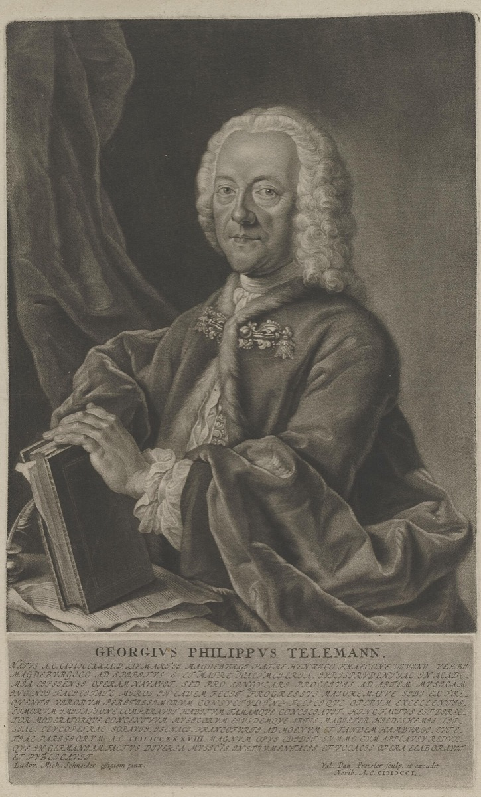

Georg Philipp Telemann

The most famous German composer of Bach's lifetime — the fact modern listeners find hardest to absorb, and the one the timeline most needs them to. Telemann was everything the age admired: fluent in every national style, unbelievably prolific, melodically charming, entrepreneurially modern (self-publishing, subscription concerts, civic music-directing in Frankfurt and then Hamburg for over four decades). While still a Leipzig law student he founded the Collegium Musicum that Bach would direct a generation later; he was Leipzig's first choice for the cantorate in 1722 and used the offer to raise his Hamburg salary — opening Bach's door without knowing it.
The personal relationship was warm across decades: godfather to Carl Philipp Emanuel in 1714, exchanging poems and letters with Bach's circle, and in extreme old age securing his godson's succession to his own Hamburg post — the Bach and Telemann lines intertwined to the end.
For Arc II he is the essential control case: the era's verdict (Telemann first, Bach a learned provincial) inverted so completely that Telemann spent two centuries as a byword for facile abundance before his own modern revival. Fame's machinery, run twice with opposite outputs — the timeline's reception story needs both runs.
Wolff, The Learned Musician
New Bach Reader (Leipzig council minutes, 1722)
→ full bibliography & links